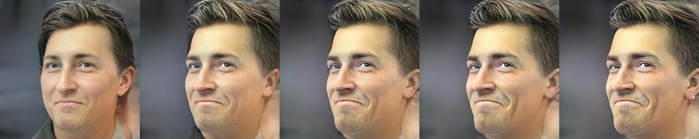
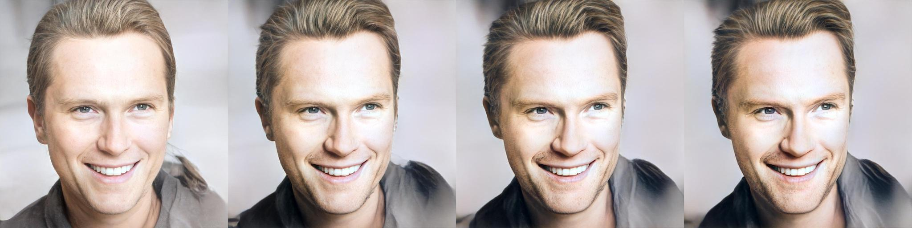
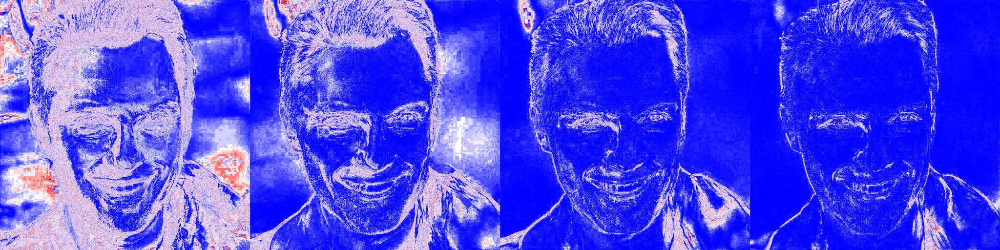
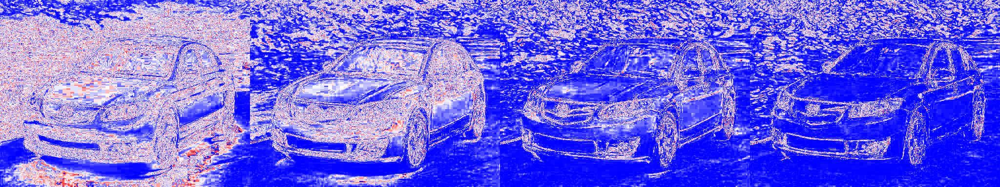
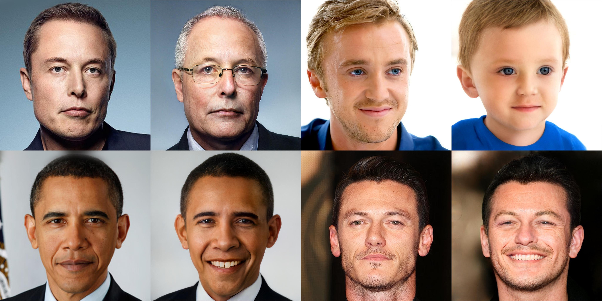

Abstract:
Recently, the power of unconditional image synthesis has significantly advanced through the use of Generative Adversarial Networks (GANs). The task of inverting an image into its corresponding latent code of the trained GAN is of utmost importance as it allows for the manipulation of real images, leveraging the rich semantics learned by the network. Recognizing the limitations of current inversion approaches, in this work we present a novel inversion scheme that extends current encoder-based inversion methods by introducing an iterative refinement mechanism. Instead of directly predicting the latent code of a given image using a single pass, the encoder is tasked with predicting a residual with respect to the current estimate of the inverted latent code in a self-correcting manner. Our residual-based encoder, named ReStyle, attains improved accuracy compared to current state-of-the-art encoder-based methods with a negligible increase in inference time. We analyze the behavior of ReStyle to gain valuable insights into its iterative nature. We then evaluate the performance of our residual encoder and analyze its robustness compared to optimization-based inversion and state-of-the-art encoders.
Overview
Our ReStyle scheme leverages the progress of recent StyleGAN encoders for inverting real images and introduces an iterative refinement mechansim that gradually converges to a more accurate inversion of real images in a self-correcting manner.
ReStyle inverts real images using multiple of forward passes by iteratively feeding the encoder with the output of the previous
step along with the original input. Our encoders learn to predict a residual between the current inverted latent and the new latent at each step.
Notably, during inference, ReStyle converges its inversion after a small number of steps (e.g., < 5), taking less than 0.5 seconds per image.
This is compared to several minutes per image when inverting using optimization techniques.

Input
Iterative Outputs →
Our ReStyle encoder operates in a coarse-to-fine manner, beginning by concentrating on low-frequency details which are then gradually complemented by adjusting high frequency, fine-level details.
Here, we show the iterative outputs of ReStyle from left to right along with heatmaps showing the magnitude of change incurred at each inference step.



We demonstrate that applying ReStyle over the recent e4e encoder leads to editable latents, allowing one to perform latent space manipulations while still achieving an accurate reconstruction.
Below we show several examples of age and smile edits on real images.

To show the generalization of our approach beyond the StyleGAN inversion task, we introduce an encoder bootstrapping technique that leverages two trained ReStyle encoders for solving the image toonification task.
Results
Below we show animations illustrating real images on the left with their encoded representations on the right. All results are shown at their full resolution.